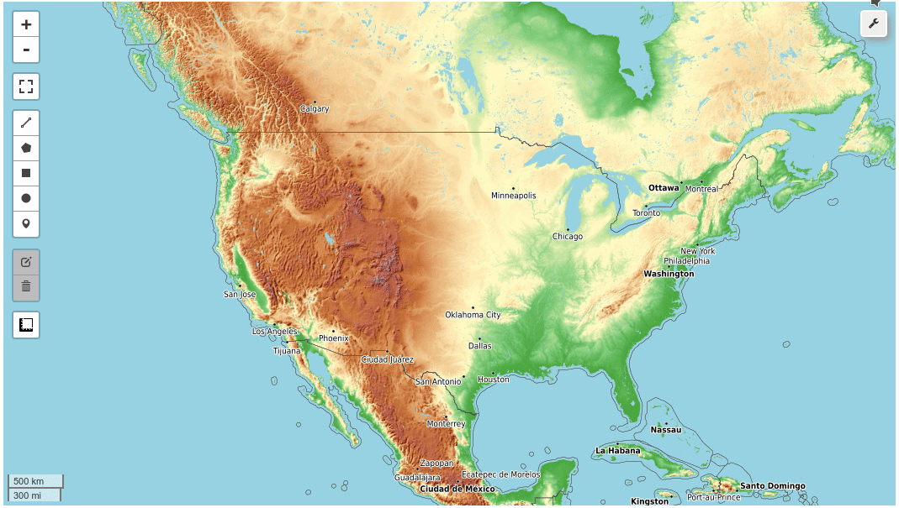

Welcome to leafmap¶


A Python package for geospatial analysis and interactive mapping in a Jupyter environment.
- GitHub repo: https://github.com/giswqs/leafmap
- Documentation: https://leafmap.org
- PyPI: https://pypi.org/project/leafmap
- Conda-forge: https://anaconda.org/conda-forge/leafmap
- Leafmap tutorials on YouTube: https://www.youtube.com/c/QiushengWu
- Free software: MIT license
Introduction¶
Leafmap is a Python package for interactive mapping and geospatial analysis with minimal coding in a Jupyter environment. It is a spin-off project of the geemap Python package, which was designed specifically to work with Google Earth Engine (GEE). However, not everyone in the geospatial community has access to the GEE cloud computing platform. Leafmap is designed to fill this gap for non-GEE users. It is a free and open-source Python package that enables users to analyze and visualize geospatial data with minimal coding in a Jupyter environment, such as Google Colab, Jupyter notebook, and JupyterLab. Leafmap is built upon a number of open-source packages, such as folium, ipyleaflet, and here-map-widget-for-jupyter (for creating interactive maps), WhiteboxTools and whiteboxgui (for analyzing geospatial data), and ipywidgets (for designing interactive graphical user interface [GUI]). The WhiteboxTools library currently contains 470+ tools for advanced geospatial analysis, which are each grouped based on their main function into one of the following categories. Users can access these tools via whiteboxgui directly within the leafmap user interface without writing a single line of code.
- Data Tools
- Geomorphometric Analysis
- GIS Analysis
- Hydrological Analysis
- Image Processing Tools
- LiDAR Tools
- Mathematical and Statistical Analysis
- Precision Agriculture
- Stream Network Analysis
Statement of Need¶
There are a plethora of Python packages for geospatial analysis, such as geopandas for vector data analysis and xarray for raster data analysis. However, few Python packages provide interactive GUIs for loading and visualizing geospatial data in a Jupyter environment. It might take many lines to code to load and display geospatial data with various file formats on an interactive map, which can be a challenging task for novice users with limited coding skills. Leafmap provides many convenient functions for loading and visualizing geospatial datasets with only one line of code. Users can also use the interactive GUI to load geospatial datasets without coding. Anyone with a web browser and Internet connection can use leafmap to perform geospatial analysis and data visualization in the cloud with minimal coding. Launch the interactive notebook tutorial for the leafmap Python package with Google Colab or Binder now:


Check out this excellent article on Medium - Leafmap a new Python Package for Geospatial data science
Key Features¶
Below is a partial list of features available for the leafmap package. Please check the examples page for notebook examples, GIF animations, and video tutorials.
- Create an interactive map with only one-line of code.
- Select from a variety of basemaps interactively without coding.
- Add XYZ, WMS, and vector tile services to the map.
- Convert CSV to points and display points as a marker cluster.
- Add local vector data (e.g., shapefile, GeoJSON, KML) to the map without coding.
- Add local raster data (e.g., GeoTIFF) to the map without coding.
- Add Cloud Optimized GeoTIFF (COG) and SpatialTemporal Asset Catalog (STAC) to the map.
- Add OpenStreetMap data to the map with a single line of code.
- Add a GeoPandas GeoDataFrame to the map with a single line of code.
- Add a point layer with popup attributes to the map.
- Add data from a PostGIS database to the map.
- Add custom legends and colorbars to the map.
- Perform geospatial analysis using WhiteboxTools and whiteboxgui.
- Create split-panel map and linked maps.
- Publish interactive maps with a single line of code.
- Download and display OpenStreetMap data with a single line of code.
Demo¶

YouTube Channel¶
I have created a YouTube Channel for sharing geospatial tutorials. You can subscribe to my channel for regular updates. If there is any specific tutorial you would like to see, please submit a feature request here.